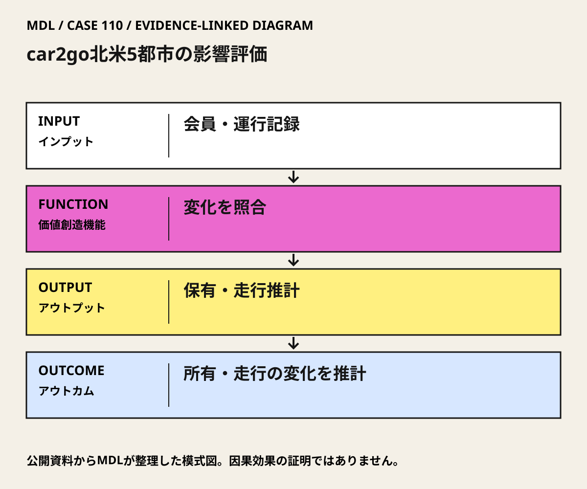

I / INPUT
何を持ち込んでいるか。
活動の出発点となる資源と課題を分けて整理します。「自社」は、その場・制度を運営する組織を指します。
- 自社・運営組織
ShaheenとMartinが方法、分析、研究報告を共同で担う。
公開資料で確認出典 1- 他社・事業会社
car2goがサービスを運営し、研究用に会員の利用頻度等を含む匿名運行データを提供。
公開資料で確認出典 1- 行政・公共機関
5都市を対象にした評価である。各自治体が研究の共同決定主体や資金提供者だったかは本資料の確認範囲では未確認。
公開資料では未確認- スタートアップ
対象は当時のcar2go。会社の存在を一般的なスタートアップ育成プログラムとみなす根拠はない。
MDLの分析出典 1- アカデミア
UC Berkeley TSRCの研究者が、質問票と実運行を統合して分析。
公開資料で確認出典 1- 市民・利用者・現場
car2go会員の自己申告。車・走行距離・排出推計の最終分析対象は6,167人で、全調査回答者数とは異なる。
公開資料で確認出典 1
II / VALUE CREATION FUNCTIONS
資源を、どう価値へ変えるか。
以下は既存の8ステップへの編集上の対応づけです。各取り組みの公式な工程名や、全工程を自前で担うことを意味しません。
III / OUTPUT
直接、何が生まれたか。
試作品、データ、契約、標準、育成した人材など、活動から直接生まれたもの。
5都市別の私有車売却・購入回避、移動手段変化、走行・排出の推計報告。
公開資料で確認出典 1
IV / OUTCOME
その結果、何が変わったか。
実際の利用、行動、業務、事業、地域の変化。報告された変化と、当該活動に帰属できる効果は区別します。
PROJECT IN FOCUS / 具体的な事例
car2go北米5都市の影響評価
確認できた段階：カーシェアの複数都市研究評価 調査確認日 2026-10-06
誰の課題を、どう扱ったか
生まれたもの
5都市別の私有車売却・購入回避、移動手段変化、走行・排出の推計報告。
確認できた変化
分析では共有車1台あたり私有車7–11台相当の売却・購入回避を推計。購入回避を含む推計であり、路上の車を直接数えた減少実績ではない。
評価の限界：自己申告、利用者の自己選択、一般人口の対照群不在、購入回避した車の走行仮定がある。推計は当時の会員・運営地域に関するもので、市全体の実測削減、現在のサービス状態、日本の保証値ではない。
DESIGN BACKWARDS FROM IMPLEMENTATION
社会実装から逆算して、
何を先に整えているか。
実証の先にある導入・運用・継続から、この事例の設計を読み解きます。原典で確認できる仕組みと、MDLの設計解釈・他地域へ応用するための提案を区別して読んでください。「提案」「未実施」と記す内容は、当地で実施済みの工夫ではありません。仕組みの存在と、全案件で成果が出たことも別に扱います。
MORE DETAIL / 運営・根拠・応用
運営の全体像と、学びを深める資料。
費用負担、公表値、応用条件、写真・動画、原典を続けて確認できます。
01どう動かしているのか。
会員の車売却・購入回避・行動変化を聞き取り、利用頻度等を運行データで重み付けする。シェア車自身の走行も含めて推計し、購入しなかった車の走行という観測できない部分には仮定を置く。
意思決定と本人の関与：学習上の判断：自治体と評価責任者が、カーシェアを支援する条件を利用者数だけで決めず、私有車の変化、追加走行、公共交通への影響、利用できない人を含む指標で決める。研究の推計をそのまま日本の削減保証にしない。 Susan ShaheenはElliot Martinとの共同評価研究者。car2goの経営・運行・自治体許認可を担った事例ではない。
- 保有と行動を聞く
- 自己申告を運行データと照合する
- 追加走行も含めて推計する
02誰が負担し、誰が担うか。
この研究の費用負担者・負担額は本カードの確認範囲では未確認。サービス料金と研究費を混同しない。
制度やプログラムの財源と、各参加企業・地域に発生する費用は同じではありません。公開範囲を超える案件別予算・契約条件は未確認です。
03確認できたこと。
04日本で活かすなら。
移すべきは1台で何台減るという係数ではなく、何が置き換わったかを確認する評価設計。行政支援の前に、データ利用条件、独立評価、撤退時の利用者対応を決める。
05そのまま真似できないこと。
自己申告、利用者の自己選択、一般人口の対照群不在、購入回避した車の走行仮定がある。推計は当時の会員・運営地域に関するもので、市全体の実測削減、現在のサービス状態、日本の保証値ではない。
06次に、何を確かめるか。
提案・未実施：自治体の交通評価担当が独立評価者・事業者と、導入前に利用者と比較群の調査を設計し90日で初回確認。保有車、総走行、公共交通の代替、移動費、利用から取り残される人を測る。現状維持、カーシェア、公共交通接続改善、既存車両の共同利用を比較。Continue＝総負担と追加走行を含め便益を確認、Pivot＝公共交通代替が大きければ配置等を変更、Stop＝利用者保護やデータ検証が成立しない。
07写真・図と原資料で確かめる。
現場の写真を見る ↑
DIAGRAM: モビリティデザインラボ · 根拠資料 ↗
図の説明
公開資料に基づく模式図。会員・運行記録 → 変化を照合 → 保有・走行推計 → 所有・走行の変化を推計。実景や地理的配置を示さない。
2026-10-06 · MDL作成の説明図。第三者の写真・図面の複製ではありません。
冒頭写真：Vancouverで並ぶ白と青のcar2go車両
原資料で、当時の調査・実践を読む ↗08原典を読む。
5都市の会員調査・運行データ、6,167人の分析標本、車両削減推計と因果解釈の限界
英語・本人共著のWorking Paper。全文PDF・無料（26ページ）。査読論文とは区別する。
Shared Mobility Policy Playbook ↗
共有交通の評価を考える本人共著の原文入口。car2goの数値根拠とは分ける
英語・政策実務ガイド。全文PDF・無料。